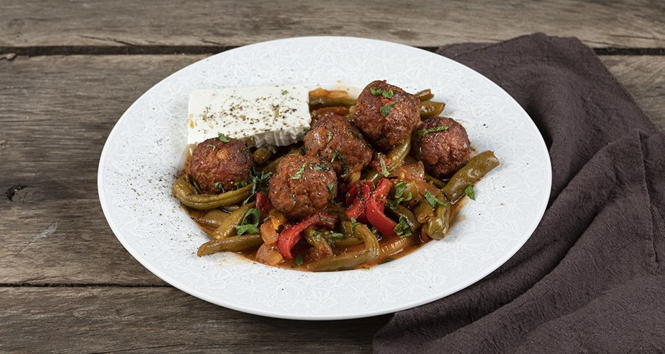

Pork with beans

Description:Delicious, very healthy and nutritious. Perfect if you need some energy for the day.
Ingredients:
- 500 g ground pork
- 1 teaspoon(s) cumin
- 1 tablespoon(s) paprika
- 1 clove(s) of garlic
- 50 g dry breadcrumbs
- 1-2 tablespoon(s) olive oil
- salt
- pepper
- 1 egg, medium
- 1 teaspoon(s) oregano
- 50 g all-purpose flour
- 400 ml seed oil
- 2 tablespoon(s) olive oil
- 1 tablespoon(s) tomato paste
- 500 g green beans
- 50 g red wine
- 400 g canned tomatoes
- 400 g water
- 1 pinch granulated sugar
Steps:
- Place a frying pan over high heat and add the seed oil.
- In a bowl add the ground pork, the cumin, the paprika, the dried breadcrumbs, the olive oil, salt, pepper, the egg, the oregano, and mix well.
- Shape about 25 meatballs and put them into a baking pan. Add the flour, salt, and toss to coat.
- Add the meatballs to the pan in two batches and fry them for about 2-3 minutes, until they are golden brown. Remove and transfer to paper towels.
- Place a pot over high heat and add the olive oil.
- Coarsely chop the onion, cut the garlic into slices, and add them to the pot. Add the thyme, salt, pepper, and sauté.
- Cut the peppers into thin strips and add them to the pot. Add paprika, the tomato paste, and sauté.
- Add the green beans, deglaze the pot with the wine, add the canned tomatoes, the water, the sugar, the meatballs, and cover with the lid. Simmer over medium heat for 20-25 minutes.
- Serve with mint, olive oil, pepper, and feta cheese.